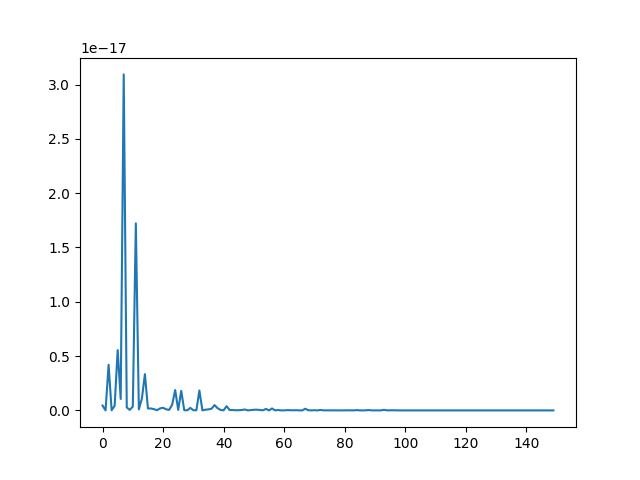

Note
Click here to download the full example code
SUH-SPH interpolation comparison¶
import numpy as np
from bfieldtools.mesh_conductor import MeshConductor, StreamFunction
from mayavi import mlab
import trimesh
import matplotlib.pyplot as plt
from bfieldtools.sphtools import basis_fields as sphfield
from bfieldtools.sphtools import field as sph_field_eval
from bfieldtools.sphtools import basis_potentials, potential
import mne
from bfieldtools.viz import plot_data_on_vertices, plot_mesh
SAVE_DIR = "./MNE interpolation/"
EVOKED = True
with np.load(SAVE_DIR + "mne_data.npz", allow_pickle=True) as data:
p = data["p"]
n = data["n"]
mesh = trimesh.Trimesh(vertices=data["vertices"], faces=data["faces"])
if EVOKED:
evoked = mne.Evoked(SAVE_DIR + "left_auditory-ave.fif")
i0, i1 = evoked.time_as_index(0.08)[0], evoked.time_as_index(0.09)[0]
field = evoked.data[:, i0:i1].mean(axis=1)
else:
# take "data" from lead field matrix, i.e, topography of a single dipole
from mne.datasets import sample
import os
data_path = sample.data_path()
raw_fname = data_path + "/MEG/sample/sample_audvis_raw.fif"
trans = data_path + "/MEG/sample/sample_audvis_raw-trans.fif"
src = data_path + "/subjects/sample/bem/sample-oct-6-src.fif"
bem = data_path + "/subjects/sample/bem/sample-5120-5120-5120-bem-sol.fif"
subjects_dir = os.path.join(data_path, "subjects")
# Note that forward solutions can also be read with read_forward_solution
fwd = mne.make_forward_solution(
raw_fname, trans, src, bem, meg=True, eeg=False, mindist=5.0, n_jobs=2
)
# Take only magnetometers
mags = np.array([n[-1] == "1" for n in fwd["sol"]["row_names"]])
L = fwd["sol"]["data"][mags, :]
# Take the first dipole
field = L[:, 56]
Out:
Read a total of 4 projection items:
PCA-v1 (1 x 102) active
PCA-v2 (1 x 102) active
PCA-v3 (1 x 102) active
Average EEG reference (1 x 60) active
Found the data of interest:
t = -199.80 ... 499.49 ms (Left Auditory)
0 CTF compensation matrices available
nave = 55 - aspect type = 100
Projections have already been applied. Setting proj attribute to True.
R = np.min(np.linalg.norm(p, axis=1)) - 0.02
idx = 20
# evoked1 = evoked.copy()
# evoked1.data[:, :] = np.tile(Bca_sensors[:, idx].T, (evoked.times.shape[0], 1)).T
# evoked1.plot_topomap(times=0.080, ch_type="mag", colorbar=False)
# evoked1 = evoked.copy()
# evoked1.data[:, :] = np.tile(Bcb_sensors[:, idx].T, (evoked.times.shape[0], 1)).T
# evoked1.plot_topomap(times=0.080, ch_type="mag", colorbar=False)
PINV = True
if PINV:
alpha = np.linalg.pinv(Bca_sensors, rcond=1e-15) @ field
else:
# Calculate using regularization
ssa = np.linalg.svd(Bca_sensors @ Bca_sensors.T, False, False)
reg_exp = 6
_lambda = np.max(ssa) * (10 ** (-reg_exp))
# angular-Laplacian in the sph basis is diagonal
La = np.diag([l * (l + 1) for l in range(1, lmax + 1) for m in range(-l, l + 1)])
BB = Bca_sensors.T @ Bca_sensors + _lambda * La
alpha = np.linalg.solve(BB, Bca_sensors.T @ field)
# Reconstruct field in helmet
# reco_sph = np.zeros(field.shape)
# i = 0
# for l in range(1, lmax + 1):
# for m in range(-1 * l, l + 1):
# reco_sph += alpha[i] * Bca_sensors[:, i]
# i += 1
# Produces the same result as the loop
reco_sph = Bca_sensors @ alpha
print(
"SPH-reconstruction relative error:",
np.linalg.norm(reco_sph - field) / np.linalg.norm(field),
)
Out:
SPH-reconstruction relative error: 0.03031555824094214
- #%% Fit the surface current for the auditory evoked response using pinv
c = MeshConductor(mesh_obj=mesh, basis_name=”suh”, N_suh=35) M = c.mass B_sensors = np.einsum(“ijk,ij->ik”, c.B_coupling(p), n)
asuh = np.linalg.pinv(B_sensors, rcond=1e-15) @ field
s = StreamFunction(asuh, c) b_filt = B_sensors @ s
c = MeshConductor(mesh_obj=mesh, basis_name="suh", N_suh=250)
M = c.mass
B_sensors = np.einsum("ijk,ij->ik", c.B_coupling(p), n)
ss = np.linalg.svd(B_sensors @ B_sensors.T, False, False)
reg_exp = 1
plot_this = True
rel_errors = []
_lambda = np.max(ss) * (10 ** (-reg_exp))
# Laplacian in the suh basis is diagonal
BB = B_sensors.T @ B_sensors + _lambda * (-c.laplacian) / np.max(abs(c.laplacian))
a = np.linalg.solve(BB, B_sensors.T @ field)
s = StreamFunction(a, c)
reco_suh = B_sensors @ s
print(
"SUH-reconstruction relative error:",
np.linalg.norm(reco_suh - field) / np.linalg.norm(field),
)
f = mlab.figure(bgcolor=(1, 1, 1))
surf = s.plot(False, figure=f)
surf.actor.mapper.interpolate_scalars_before_mapping = True
surf.module_manager.scalar_lut_manager.number_of_colors = 16

Out:
Calculating surface harmonics expansion...
Computing the laplacian matrix...
Computing the mass matrix...
Closed mesh or Neumann BC, leaving out the constant component
Computing the mass matrix...
Computing magnetic field coupling matrix, 2562 vertices by 102 target points... took 0.18 seconds.
Computing the laplacian matrix...
SUH-reconstruction relative error: 0.011259097908098575
evoked1 = evoked.copy() evoked1.data[:, :] = np.tile(field.T, (evoked.times.shape[0], 1)).T evoked1.plot_topomap(times=0.080, ch_type=”mag”)
# evoked1 = evoked.copy()
# evoked1.data[:, :] = np.tile(reco_sph.T, (evoked.times.shape[0], 1)).T
# evoked1.plot_topomap(times=0.080, ch_type="mag")
# evoked1 = evoked.copy()
# evoked1.data[:, :] = np.tile(reco_suh.T, (evoked.times.shape[0], 1)).T
# evoked1.plot_topomap(times=0.080, ch_type="mag")
fig, ax = plt.subplots(1, 1)
ax.plot(alpha ** 2)
L = np.zeros((0,))
M = np.zeros((0,))
for l in range(1, lmax + 1):
m_l = np.arange(-l, l + 1, step=1, dtype=np.int_)
M = np.append(M, m_l)
L = np.append(L, np.repeat(l, len(m_l)))
xticknames = [None] * len(alpha)
for i in range(len(alpha)):
xticknames[i] = str(M[i])
m_l = np.arange(-L[i], L[i] + 1, step=1)
if i == int(np.floor(len(m_l))):
xticknames[i] += "\n" + str(L[i])
plt.figure()
plt.plot(a ** 2)

- 
Out:
[<matplotlib.lines.Line2D object at 0x7f9efea3f750>]
from bfieldtools.utils import load_example_mesh
from bfieldtools.flatten_mesh import flatten_mesh, mesh2plane
helmet = load_example_mesh("meg_helmet", process=False)
# Bring the surface roughly to the correct place
helmet.vertices[:, 2] -= 0.045
# The helmet is slightly tilted, correct for this
# (probably the right coordinate transformation could be found from MNE)
rotmat = np.eye(3)
tt = 0.015 * np.pi
rotmat[:2, :2] = np.array([[np.cos(tt), np.sin(tt)], [-np.sin(tt), np.cos(tt)]])
helmet.vertices = helmet.vertices @ rotmat
tt = -0.02 * np.pi
rotmat[1:, 1:] = np.array([[np.cos(tt), np.sin(tt)], [-np.sin(tt), np.cos(tt)]])
helmet.vertices = helmet.vertices @ rotmat
helmet.vertices[:, 1] += 0.005
# plot_mesh(helmet)
# mlab.points3d(*p.T, scale_factor=0.01)
B_sph_helmet = sph_field_eval(
helmet.vertices,
alpha,
np.zeros(alpha.shape),
lmax=lmax,
normalization="energy",
R=R,
)
B_sph_helmet = np.einsum("ij,ij->i", B_sph_helmet, helmet.vertex_normals)
B_suh_helmet = c.B_coupling(helmet.vertices) @ s
B_suh_helmet = np.einsum("ij,ij->i", B_suh_helmet, helmet.vertex_normals)
Out:
Computing magnetic field coupling matrix, 2562 vertices by 2044 target points... took 1.42 seconds.
Out:
[[4.77790946e-01 4.66308115e-01 5.59009381e-02]
[5.04848824e-01 4.42294362e-01 5.28568138e-02]
[4.15888839e-01 2.50513180e-01 3.33597981e-01]
[2.06948013e-01 5.88223293e-01 2.04828694e-01]
[7.43679193e-01 1.41597623e-02 2.42161044e-01]
[2.60921217e-01 1.20738365e-01 6.18340418e-01]
[1.06206809e-01 4.65233540e-01 4.28559651e-01]
[4.23861276e-01 2.85462097e-01 2.90676627e-01]
[4.62148412e-01 4.52560953e-01 8.52906351e-02]
[3.09306223e-02 8.52708268e-01 1.16361110e-01]
[2.70379534e-01 6.81687446e-01 4.79330195e-02]
[4.59313482e-01 3.12962219e-01 2.27724300e-01]
[6.92782782e-01 4.97428360e-02 2.57474382e-01]
[1.29101813e-01 1.64312903e-01 7.06585284e-01]
[3.36234522e-01 2.74311949e-01 3.89453530e-01]
[4.13475354e-01 3.73633628e-01 2.12891018e-01]
[8.33417794e-01 1.57603804e-01 8.97840261e-03]
[7.98616179e-01 9.00989335e-02 1.11284888e-01]
[8.03083739e-01 6.64707125e-02 1.30445549e-01]
[4.20927343e-01 4.28587408e-01 1.50485249e-01]
[8.18570681e-01 4.51420621e-02 1.36287257e-01]
[1.15661059e-01 5.62169746e-01 3.22169194e-01]
[2.47303261e-01 4.95183716e-01 2.57513024e-01]
[3.84895035e-01 4.70099315e-01 1.45005650e-01]
[1.88017253e-01 7.40471379e-01 7.15113683e-02]
[6.74873443e-01 9.61318319e-02 2.28994725e-01]
[1.59982479e-01 8.11252699e-01 2.87648212e-02]
[4.64517071e-01 4.27399733e-01 1.08083197e-01]
[7.54474593e-02 5.85757656e-01 3.38794884e-01]
[1.08843711e-01 8.13037122e-01 7.81191668e-02]
[3.43369501e-01 3.13493214e-01 3.43137284e-01]
[1.85170017e-01 2.30579710e-01 5.84250273e-01]
[6.79646872e-01 2.67706147e-01 5.26469810e-02]
[1.89212972e-02 8.60663857e-01 1.20414846e-01]
[2.19693188e-01 2.64810472e-01 5.15496340e-01]
[7.98823957e-02 9.34769612e-02 8.26640643e-01]
[7.14094442e-02 8.31475458e-01 9.71150982e-02]
[2.59097013e-01 1.68490975e-01 5.72412012e-01]
[4.07343600e-01 5.11036819e-01 8.16195811e-02]
[1.32717971e-01 8.33138582e-01 3.41434471e-02]
[3.13462614e-01 1.48062662e-01 5.38474724e-01]
[7.42881759e-01 3.12088539e-03 2.53997356e-01]
[2.96876194e-01 4.98077092e-01 2.05046714e-01]
[3.65814138e-01 2.62254712e-01 3.71931150e-01]
[1.10720060e-02 8.64955708e-01 1.23972286e-01]
[3.21144032e-01 4.86537021e-01 1.92318946e-01]
[1.04443169e-01 5.71941118e-01 3.23615713e-01]
[4.50790738e-01 2.19189994e-01 3.30019268e-01]
[4.04778105e-01 4.00887623e-01 1.94334273e-01]
[3.18676147e-01 1.28560681e-01 5.52763172e-01]
[2.76242426e-01 1.41158119e-01 5.82599454e-01]
[6.37868960e-01 1.95355662e-01 1.66775377e-01]
[5.50284086e-01 1.22559125e-01 3.27156789e-01]
[3.91686577e-01 3.21600278e-01 2.86713144e-01]
[6.41682583e-01 1.75384412e-02 3.40778975e-01]
[3.74331903e-01 6.11714862e-01 1.39532357e-02]
[4.91429595e-01 2.63888562e-01 2.44681844e-01]
[6.35704510e-01 4.43918667e-02 3.19903623e-01]
[4.61609699e-01 4.64453618e-01 7.39366822e-02]
[2.29987050e-01 6.06818740e-01 1.63194210e-01]
[4.49050475e-01 5.19773901e-02 4.98972135e-01]
[1.78305352e-01 8.02680348e-01 1.90143004e-02]
[5.92190154e-01 2.36098014e-01 1.71711832e-01]
[5.32022306e-01 6.23686733e-02 4.05609021e-01]
[8.45463806e-01 1.41576509e-01 1.29596841e-02]
[2.72054347e-01 6.96928499e-01 3.10171545e-02]
[1.64155952e-01 4.80567404e-01 3.55276644e-01]
[3.01494502e-02 8.05901183e-01 1.63949366e-01]
[8.07603124e-01 5.70982717e-02 1.35298604e-01]
[5.12699459e-02 8.48197335e-01 1.00532719e-01]
[9.92918764e-02 8.13559843e-01 8.71482810e-02]
[2.95361027e-02 8.54295204e-01 1.16168693e-01]
[1.52681899e-01 1.70938516e-01 6.76379585e-01]
[5.22745635e-01 2.39884144e-02 4.53265951e-01]
[3.05745434e-01 6.45469198e-01 4.87853678e-02]
[2.49609614e-01 5.60223186e-01 1.90167200e-01]
[2.49872837e-01 4.36461163e-01 3.13665999e-01]
[1.64160685e-01 6.01108400e-01 2.34730915e-01]
[1.26418576e-01 7.73225941e-01 1.00355483e-01]
[3.63806414e-01 8.45752805e-02 5.51618306e-01]
[3.12551064e-01 3.64475961e-01 3.22972975e-01]
[2.32512251e-01 3.00794031e-01 4.66693718e-01]
[3.67268508e-01 4.18395990e-01 2.14335502e-01]
[6.60337685e-01 9.38646701e-02 2.45797645e-01]
[2.55563841e-01 7.04043603e-01 4.03925562e-02]
[1.01576353e-01 9.44391259e-02 8.03984521e-01]
[8.30444738e-01 1.69555262e-01 3.19874442e-16]
[5.94903548e-02 4.95979689e-01 4.44529956e-01]
[4.72055368e-01 4.90818032e-01 3.71265995e-02]
[5.13788461e-02 2.92824093e-01 6.55797060e-01]
[8.30214691e-02 5.90872458e-01 3.26106073e-01]
[5.28685228e-01 3.53478373e-01 1.17836399e-01]
[5.09967808e-01 4.08945931e-01 8.10862610e-02]
[7.99938690e-02 1.65871584e-01 7.54134547e-01]
[9.37119246e-01 4.97369247e-02 1.31438293e-02]
[2.48409612e-01 2.13835603e-01 5.37754785e-01]
[1.02797084e-02 7.00353226e-01 2.89367066e-01]
[5.12935918e-02 7.64795260e-01 1.83911148e-01]
[4.27092686e-01 1.07235504e-01 4.65671810e-01]
[4.19750407e-01 3.10679716e-02 5.49181621e-01]
[2.18460265e-01 6.60894300e-01 1.20645435e-01]
[3.98441012e-01 6.00401469e-01 1.15751852e-03]]
from scipy.interpolate import Rbf
rbf_f = Rbf(puv[:, 0], puv[:, 1], field, function="linear", smooth=0)
rbf_field = rbf_f(helmet2d.vertices[:, 0], helmet2d.vertices[:, 1])
vmin = -7e-13
vmax = 7e-13
f = plot_data_on_vertices(helmet2d, rbf_field, ncolors=15, vmin=vmin, vmax=vmax)
mlab.points3d(puv[:, 0], puv[:, 1], 0 * puv[:, 0], scale_factor=0.1, color=(0, 0, 0))
f.scene.z_plus_view()
mlab.savefig(SAVE_DIR + "rbf_helmet_B.png", figure=f, magnification=4)
suh_field = (
np.einsum("ijk,ij->ik", c.B_coupling(helmet.vertices), helmet.vertex_normals) @ s
)
f = plot_data_on_vertices(helmet2d, suh_field, ncolors=15, vmin=vmin, vmax=vmax)
mlab.points3d(puv[:, 0], puv[:, 1], 0 * puv[:, 0], scale_factor=0.1, color=(0, 0, 0))
f.scene.z_plus_view()
mlab.savefig(SAVE_DIR + "suh_helmet_B.png", figure=f, magnification=4)
Bca, Bcb = sphfield(helmet.vertices, lmax, normalization="energy", R=R)
# sph-components at sensors
sph_field = np.einsum("ijk,ij->ik", Bca, helmet.vertex_normals) @ alpha
f = plot_data_on_vertices(helmet2d, sph_field, ncolors=15, vmin=vmin, vmax=vmax)
mlab.points3d(puv[:, 0], puv[:, 1], 0 * puv[:, 0], scale_factor=0.1, color=(0, 0, 0))
f.scene.z_plus_view()
mlab.savefig(SAVE_DIR + "sph_helmet_B.png", figure=f, magnification=4)


- %% Compute potential
U_sph = potential( p, alpha, np.zeros(alpha.shape), lmax=lmax, normalization=”energy”, R=R )
U_suh = c.U_coupling(p) @ s
# evoked1 = evoked.copy()
# evoked1.data[:, :] = np.tile(U_sph.T, (evoked.times.shape[0], 1)).T
# evoked1.plot_topomap(times=0.080, ch_type="mag")
# evoked1 = evoked.copy()
# evoked1.data[:, :] = np.tile(U_suh.T, (evoked.times.shape[0], 1)).T
# evoked1.plot_topomap(times=0.080, ch_type="mag")
from bfieldtools.utils import load_example_mesh
from bfieldtools.mesh_calculus import gradient
plane = load_example_mesh("10x10_plane_hires")
scaling_factor = 0.03
plane.apply_scale(scaling_factor)
# Rotate to x-plane
t = np.eye(4)
theta = np.pi / 2 * 1.2
t[1:3, 1:3] = np.array(
[[np.cos(theta), np.sin(theta)], [-np.sin(theta), np.cos(theta)]]
)
plane.apply_transform(t)
c.U_coupling.reset()
U_suh = c.U_coupling(plane.vertices) @ a
# Adapt mesh to the function and calculate new points
for i in range(2):
g = np.linalg.norm(gradient(U_suh, plane), axis=0)
face_ind = np.flatnonzero(g > g.max() * 0.05)
plane = plane.subdivide(face_ind)
U_suh = c.U_coupling(plane.vertices) @ a
U_sph = potential(
plane.vertices, alpha, np.zeros(alpha.shape), lmax=lmax, normalization="energy", R=R
)
Out:
Computing scalar potential coupling matrix, 2562 vertices by 1592 target points... took 4.73 seconds.
Computing scalar potential coupling matrix, 2562 vertices by 838 target points... took 2.84 seconds.
Computing scalar potential coupling matrix, 2562 vertices by 880 target points... took 2.87 seconds.
# Mask inside/outside using solid angle
mask = abs(c.U_coupling.matrix.sum(axis=1)) < 1e-6
f = plot_data_on_vertices(plane, U_suh * mask, ncolors=15)
# plot_mesh(mesh, figure=f)
f = plot_data_on_vertices(plane, U_sph * mask, ncolors=15)
# plot_mesh(mesh, figure=f)
f = plot_data_on_vertices(plane, (U_suh - U_sph) * mask, ncolors=15)
plot_mesh(mesh, figure=f)


Out:
<mayavi.modules.surface.Surface object at 0x7f9f25095f50>
Total running time of the script: ( 1 minutes 50.638 seconds)
Estimated memory usage: 1473 MB